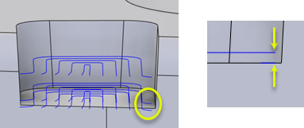

<div id="flat_finalStepdown"><p>2 つの最終パス間の距離です。</p>
<p>通常、この距離は、仕上げ切削を実現するために、ツールパスで指定された切込みピッチよりも小さくなります。</p>
<table class="tipTable" cellspacing="10">
<tr>
<td><center></center></td>
</tr><tr>
<td><center></center></td>
</tr></table>
</div>